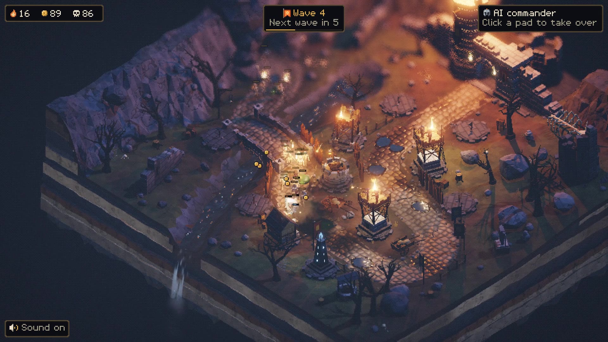
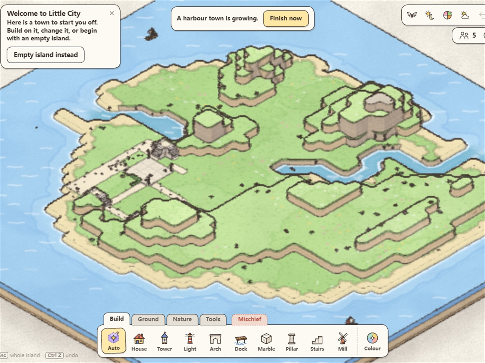
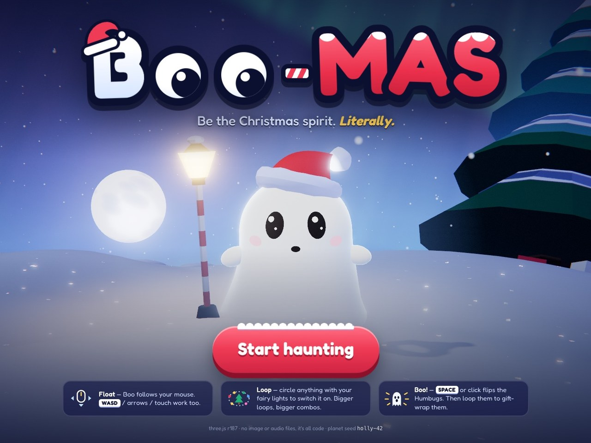
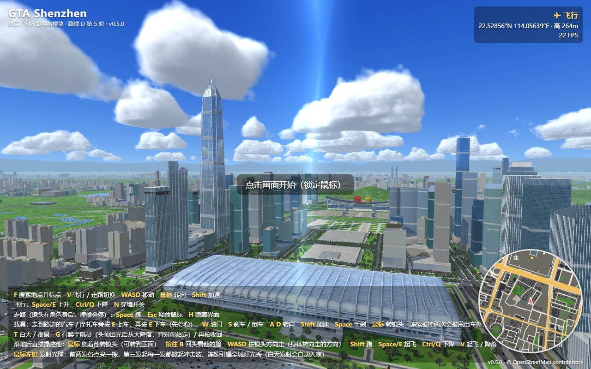
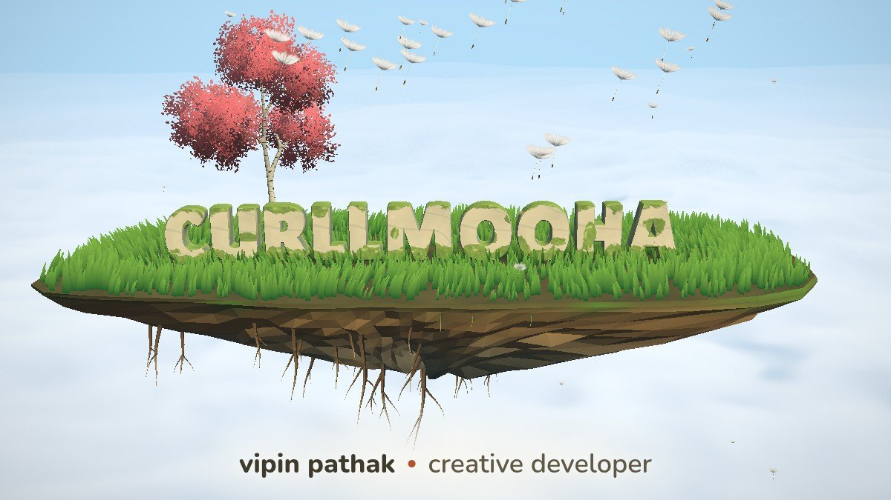
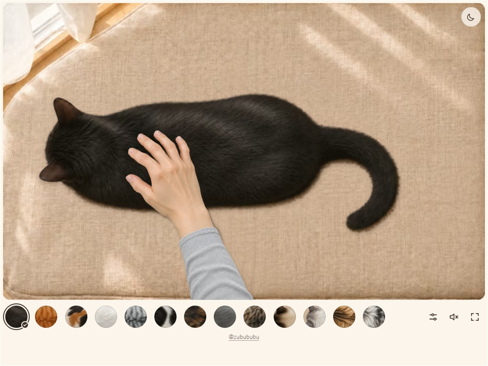
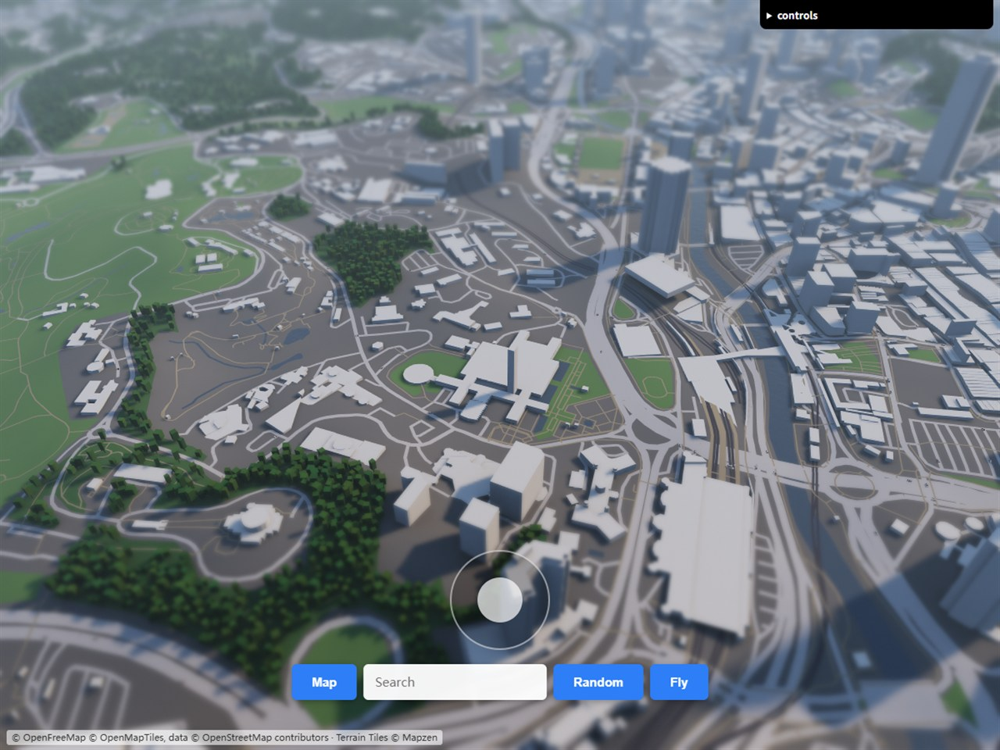
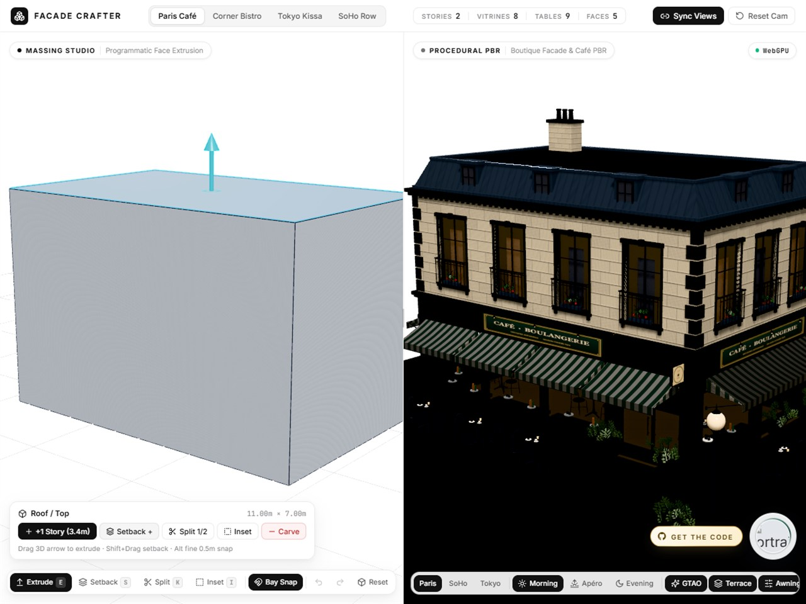
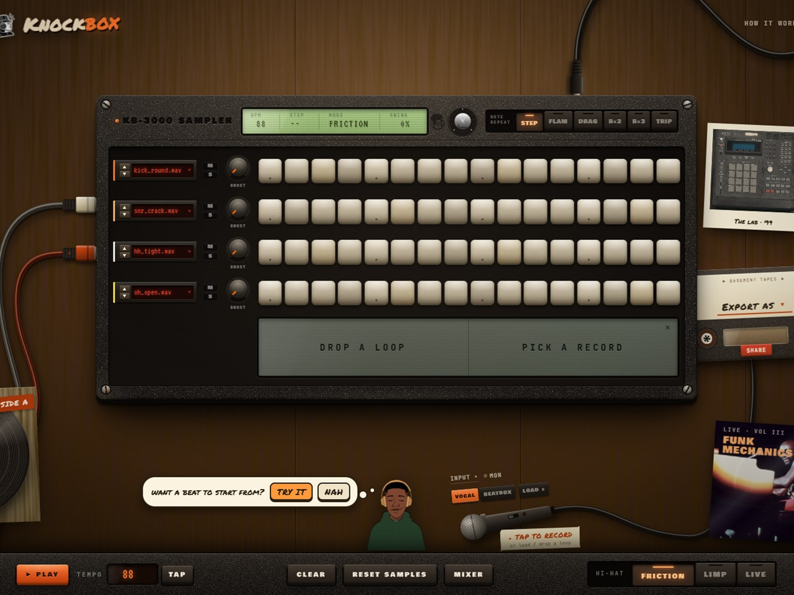
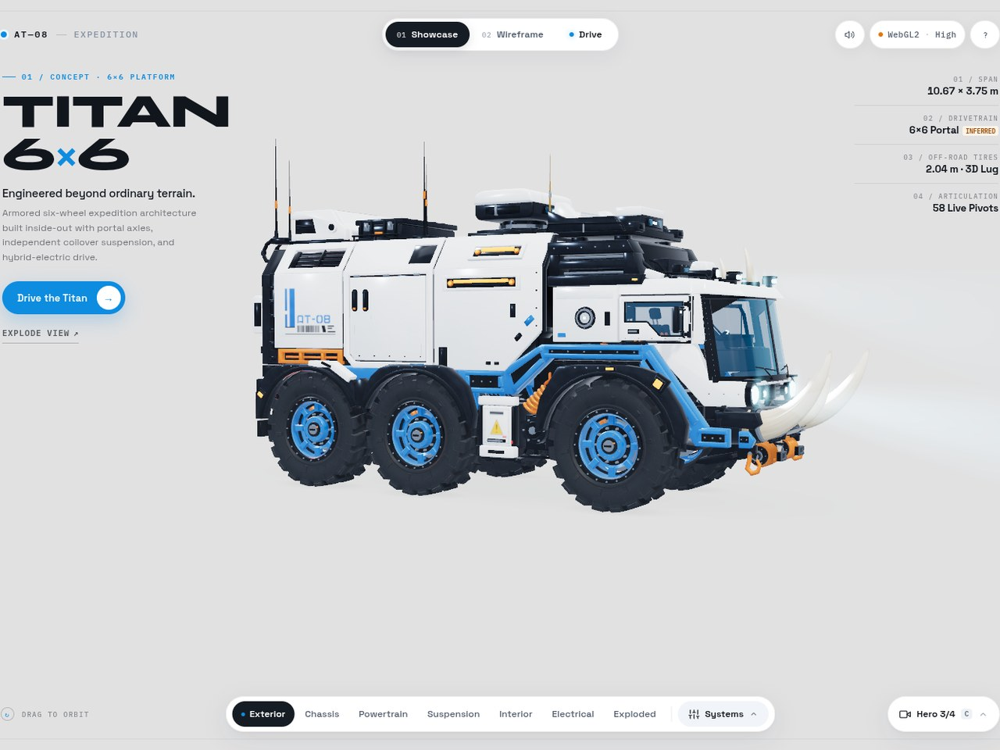

Games.
Twelve browser-native spaces: a city rebuilt from open map data, a working container port, a hand-drawn San Francisco you can zoom into forever, a meadow portfolio you can walk through, a self-playing tower defense in a single HTML file, a cat you can pet in thirteen coats, a hand-drawn island town you grow block by block, a WebGPU map where sunlight is ray traced through real buildings, a storefront studio that rebuilds a café as you sketch it, a tiny ghost in a Santa hat stringing fairy lights around a snow-globe planet, a browser drum machine with a crooked, off-the-grid swing, and an armored 6×6 expedition truck you can orbit, X-ray or drive over procedural ground.
Two shelves: finished games with a complete play loop, and playable worlds, tools and prototypes that are more about exploring, looking or building. Separate from the interface and Codevember shelves.
Finished games
3 · complete play loopsGames with a start, a rule set and a reason to keep playing.

Cinderwatch
A self-playing 3D isometric tower defense in a single HTML file: four tower types, twenty monster kinds, five lands, and an AI commander you can take over at any time.

Little City
A hand-drawn town diorama you build block by block: place a few buildings, watch a harbour town grow, then let the wedding, market day and lighthouse come to life.

Boo-mas
Be the Christmas spirit: drag a string of fairy lights behind a tiny ghost, loop trees and cottages to light them before midnight, and boo Humbugs onto their backs.
Playable worlds, tools & prototypes
9 · explore, look, buildInteractive scenes and studies: some are playable worlds, some are experiments, and not all have a complete game loop.

GTA Shenzhen
A playable 3D Shenzhen built from OSM data: streets, blocks, traffic, a character and a city you can walk through.
Greyhaven Harbour
A working container port in the browser: a freighter, tug, quay cranes, cargo yard, terrain, water and a camera tour.

Small SF
A hand-drawn isometric San Francisco: zoom the DZI city while Muni, ferries, planes, boats, traffic, weather and game-night lights move over it.

Curllmooha
A clay-rendered meadow portfolio: grass, weather and a day–night cycle hide the work along winding paths you can walk through.

Pet the Cat
A Japanese cat-petting simulator: thirteen coats, a hand that follows your pointer, tail physics act out the stroke, and the purr is synthesized in WebAudio.

Raytraced Map
A WebGPU OpenStreetMap world anywhere on Earth: real building footprints, sky light and sun shadows traced into a virtual lightmap while you fly through the city.

Facade Crafter
A WebGPU storefront studio: sketch massing boxes on the left while a procedural Paris café, corner bistro or Tokyo kissaten rebuilds itself on the right.

Knockbox
A browser drum machine with a crooked, off-the-grid swing: program four drum rows, shape ghost notes and humanize, chop a loop or record a vocal, then bounce MIDI, WAV and stems.

TITAN 6X6
An armored 6×6 expedition truck as a playable study: orbit the studio model, flip into CAD wireframe, then drive over procedural ground with hydraulic suspension and winch physics. Editable source, no build step; still more of a toy than a finished game.